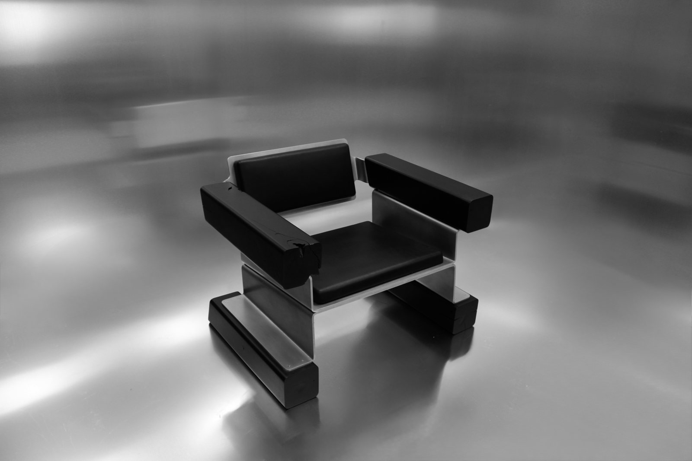
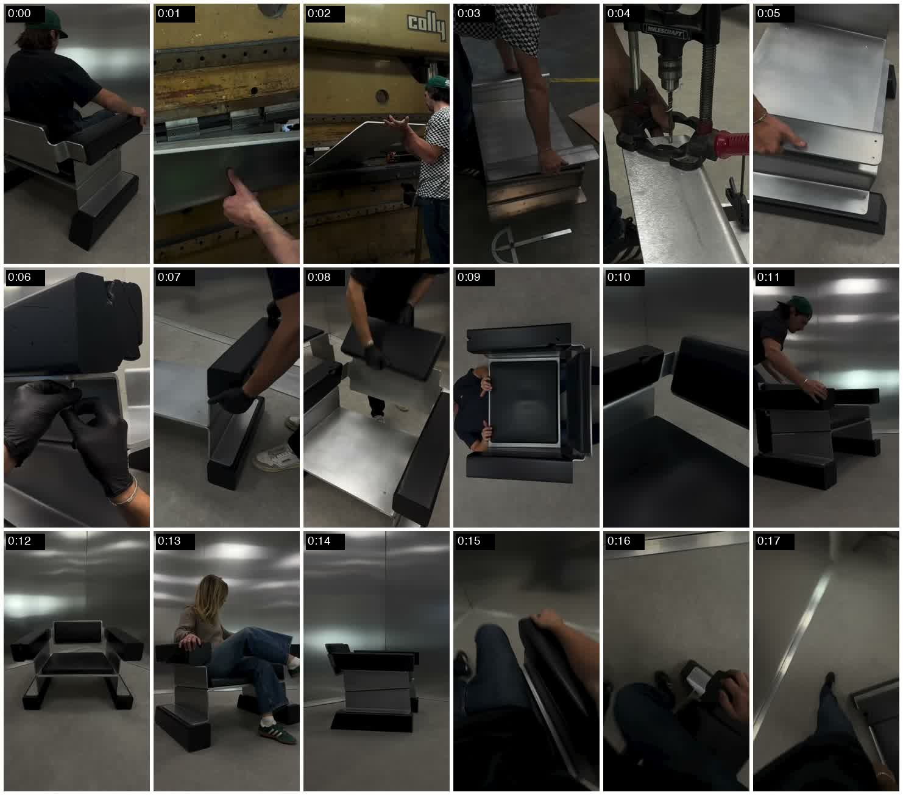

Фотографии: Balboa Design.
PSILO
Кресло Balboa Design из гнутого алюминия, чёрного ореха и кожи. Разбираем устройство по фотографиям и видео изготовления.
- Размер оригинала
- 92 × 76 × 68 см
- Металл
- Гнутый алюминий
- Дерево
- Массив ореха
- Обивка
- Кожа растительного дубления
Передать мастеру
Подготовлены предварительное техническое задание, маршрутная карта и эскизная модель для обсуждения. Несущую схему и рабочие чертежи ещё нужно разработать и согласовать.
Разложить кресло на детали в 3D · Открыть ТЗ и технологическую карту · Скачать PDF для производства · Скачать эскизную 3D-модель · Скачать сцену Blender
Эскиз по фото, не модель для раскроя. Только габариты подтверждены производителем; остальные размеры и соединения оценочные.
Подготовлены отдельные листовые детали, теоретические развёртки DXF и сборка STEP/FreeCAD. Принятые для расчёта параметры: толщина 5 мм, внутренний радиус гиба 10 мм, K=0,4. Сплав, крепление спинки и прочность не согласованы. Файлы предназначены для конструктора и технолога; в резку их пока запускать нельзя.
Скачать предварительную CAD-сборку и развёртки · Условия и ограничения
Три ракурса
Рендеры нашей предварительной 3D-модели. Нажми на изображение, чтобы открыть его в полном размере. Скачать все три.


Модель восстановлена по фотографиям; точные соединения и размеры деталей требуют согласования с производством.
Что уточнить у друга
Ответы помогут выбрать материал, разработать соединения и подготовить развёртки под конкретный станок.
- Какой металл доступен: алюминий или сталь? Какие марки, состояния и толщины листа можно купить?
- Есть ли лазерная или другая резка листа и листогиб? Каковы рабочая ширина, усилие и доступный гибочный инструмент?
- Можно ли сделать пробный гиб на выбранном материале и определить фактический радиус и поправку на гибку?
- Можно ли на производстве изготовить деревянные брусья, обивку и мягкие элементы или потребуется отдельный подрядчик?
- Допустимы ли замены оригинальных материалов — ореха и натуральной кожи? Какие варианты доступны?
- Может ли конструктор производства проработать крепления спинки и подлокотников, проверить несущую схему и согласовать испытания опытного образца?
Из чего состоит кресло
Форма строится на контрасте широких тёмных брусьев и тонких металлических плоскостей. Сиденье и спинка выглядят как отдельные мягкие элементы внутри каркаса.
Гнутые алюминиевые листы образуют опоры и несущие поверхности.
Орех тонирован в чёрный цвет и покрыт лаком. Текстура и торцы остаются заметными.
Сиденье и спинка обтянуты кожей растительного дубления.
Размеры отдельных деталей, толщина металла и скрытые крепления не опубликованы. Фотографии и видео позволяют восстановить принцип, но не точный рабочий чертёж.
От листа до кресла

Кадры из предоставленного видео Balboa Design, по одному в секунду.
- Алюминиевый лист гнут на листогибочном прессе.
- В металлических элементах сверлят отверстия и собирают основание.
- На каркас устанавливают тёмные деревянные детали и мягкие элементы.
- Готовое кресло показывают с разных сторон и проверяют в использовании.
Что известно
Размеры и материалы приведены по странице оригинала Balboa Design. Порядок сборки восстановлен по предоставленному короткому видео; скрытые этапы оно не показывает.